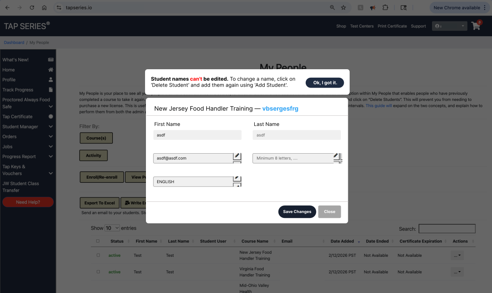
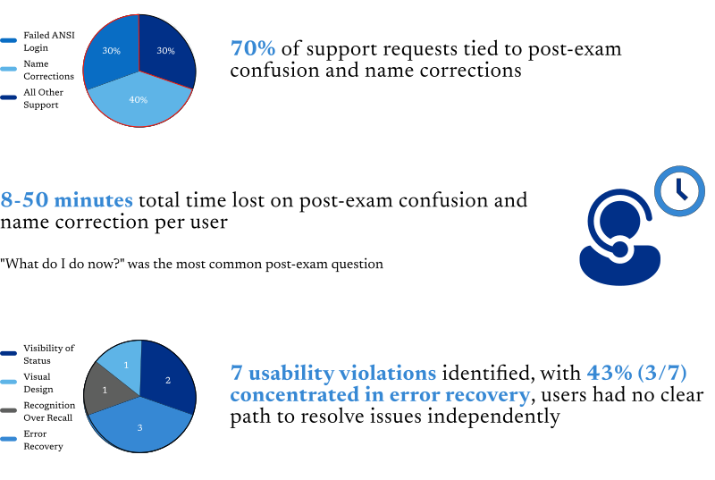
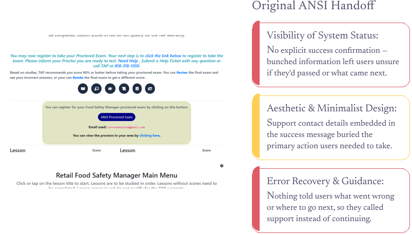
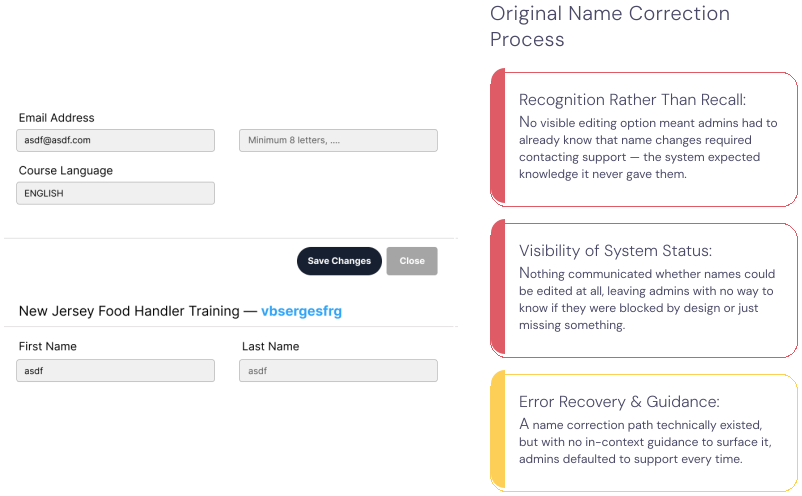
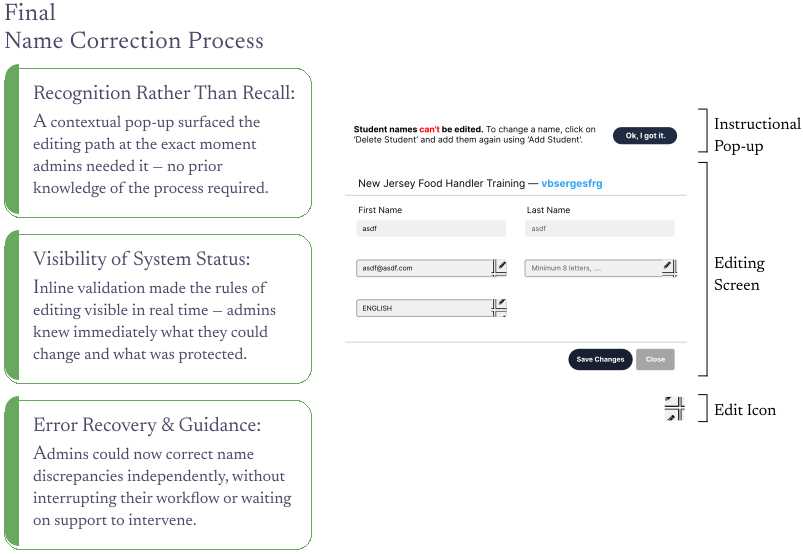

Reducing Repetitive Support Contact by Solving Log-In Exam Hand Off & Error Recovery at TAP Series.
Overview
Through systematic identification of user pain points, I designed targeted solutions that improved the overall experience while maintaining system integrity. Using Agile methodology, I collaborated with developers to implement intuitive UI improvements that reduced friction and enhanced reliability.
Company
TAP Series LLC
Collaborators
Co-Founder, Developers, Marketing
Timeline
3 Months
Industry
Compliance Training & Software
Role
Production Assistant
Responsibilities
UI Design, Usability Research, UX Metrics, Dev Handoff
Problem Statement
Users completing Food Safety Manager training encountered unclear post-exam messaging and frequent login failures when accessing the ANSI proctoring site, while administrators struggled with name discrepancies that didn't match legal documentation. How might we create clear post-exam pathways and secure name editing workflows that reduce user confusion, prevent certification fraud, and minimize support burden?
Business Goals
To reduce support costs and accelerate certification completion, TAP Series aimed to eliminate friction at critical user touchpoints while maintaining system security and compliance integrity. Our supervisor provided strategic questions that guided our design approach:
HMW clarify post-exam guidance to reduce user confusion and login failures during the TAP-to-ANSI handoff?
HMW enable secure name corrections that empower admin self-service while preventing certification fraud?
User Research
Understanding Certification Friction, Admin Dependencies, and Support Escalation Patterns
To identify where users encountered confusion and what drove support requests, I conducted heuristic evaluations using Jakob Nielsen's 10 Usability Heuristics and analyzed support ticket logs and call transcripts. This research revealed quantitative patterns in post-exam confusion, login failures, and name correction requests that were creating support bottlenecks.
Research Takeaway
There is a Need for Proactive System Guidance
Support volume concentrated around two predictable moments: post-exam transitions and name corrections. Users escalated not because problems were complex, but because the system provided no in-context guidance for resolution. I addressed this by designing anticipatory messaging and secure self-service flows that reduced cognitive load at critical decision points.
User Persona
Reducing Friction for Low-Tech-Confidence Learners, Meet Maria...
I crafted user personas using support ticket patterns and heuristic findings to emphasize how unclear system guidance disproportionately affected users with limited technical familiarity. This persona, representing restaurant managers and food service workers, highlights how low confidence navigating third-party systems led to immediate support escalation rather than self-directed problem-solving.

Problem 1: ANSI Handoff
HMW Clarify Post-Exam Guidance to Reduce User Confusion and Login Failures During the TAP-to-ANSI Handoff?
Redesign post practice exam messaging to eliminate access barriers for food safety trainees, reducing confusion and support calls while ensuring seamless entry to their certification exam.


Problem 2: Name Correction Process
HMW Enable Secure Name Corrections that Empower Admin Self-Service While Preventing Certification Fraud?
Redesign the student name management workflow to balance security and flexibility, allowing legitimate corrections while preventing unauthorized changes that compromise certification validity.
 Conclusion
Conclusions
By redesigning post-exam messaging and implementing a secure name editing workflow, I reduced customer support calls for these specific issues by 60% while maintaining system integrity. The solution balanced user autonomy with fraud prevention, demonstrating that thoughtful UI improvements can simultaneously enhance experience and protect business goals. Collaborating with developers through Agile sprints taught me how to advocate for user needs while respecting technical constraints, resulting in solutions that were both impactful and feasible to implement.
What I Learned
This project reinforced that small, strategic design decisions, like clear success messaging and contextual pop-ups, can have outsized impact on operational efficiency. I learned to identify friction points through heuristic evaluation and translate qualitative pain points (user confusion) into quantifiable business outcomes (45% total support reduction). Working within an established platform taught me the value of designing within constraints, using existing UI patterns to create familiar, low-risk solutions that developers could implement quickly. Most importantly, I learned that effective UX isn't always about building new features, sometimes the most impactful work is removing confusion from what already exists.